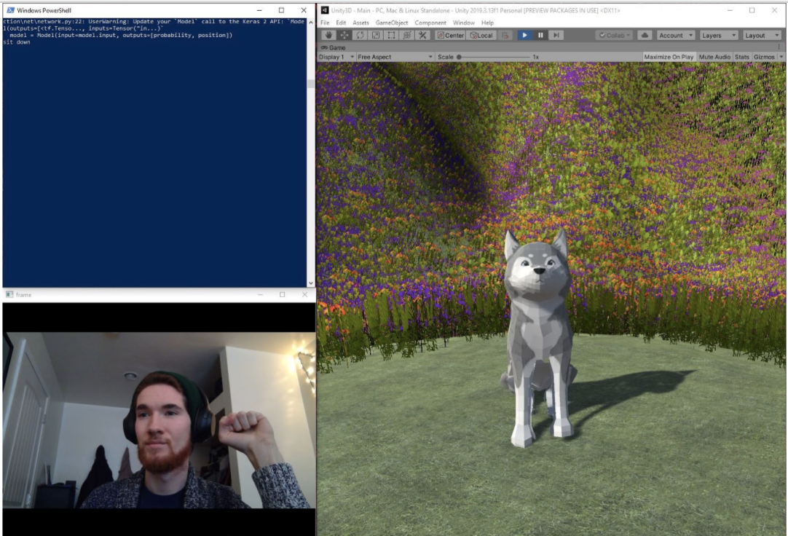
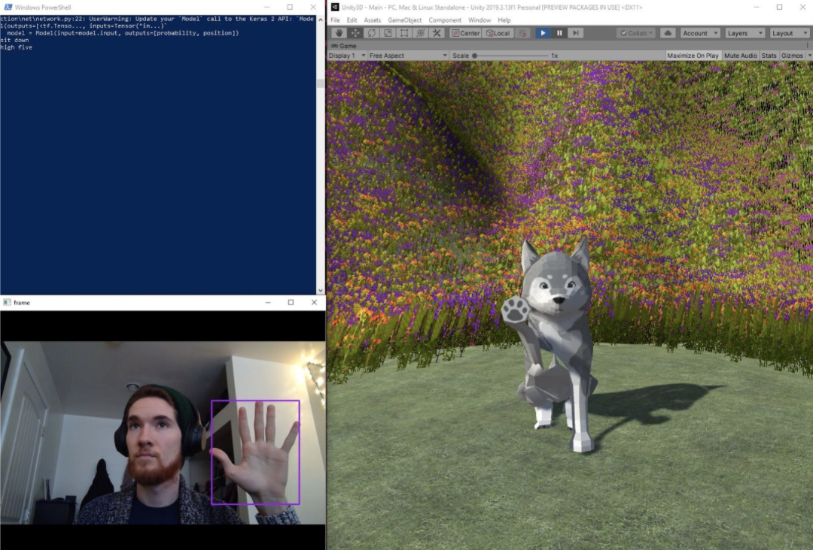
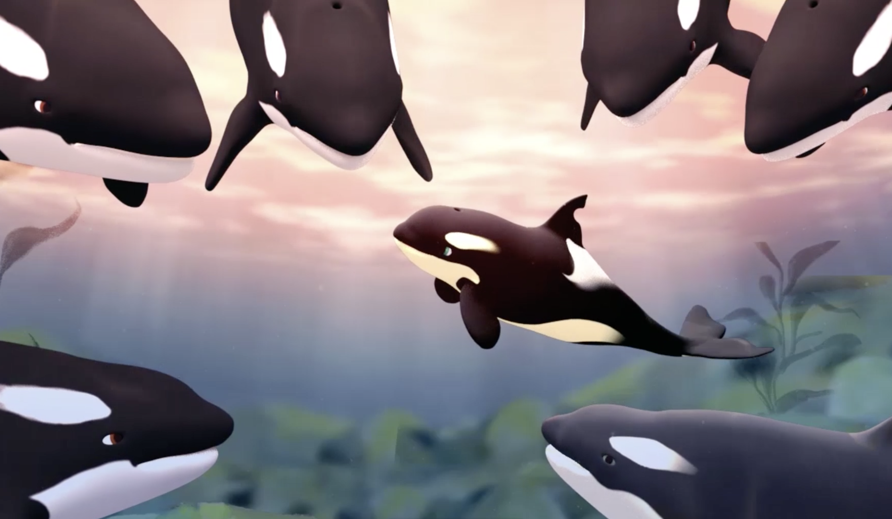

Projects
Gesture Tracking Dog Simulation App
The idea behind this project is to use computer vision techniques to detect human gestures through a laptop webcam or cellphone camera. We built an animated low poly Husky in Blender, our school mascot, that would react to hand gestures read through a web camera with tricks. The final game was created in Unity.


Animation Capstone: Untethered
Worked through animation production pipeline with a group of students from different academic backgrounds as Producer and Lead of Animatic under the instruction of Barbara Mones. Also worked in lighting, motion, modeling and facial expression. The short film follows the story of granny an orca in the local PNW Jpod.


Modeler, Trace, Animator
In my computer science graphics course, throughout the course me and partner worked on developing different tools for a 3D graphics program. The first step was modeler, which included constructing Surfaces of Revolution and mesh smoothing, then Trace which constructs recursively ray-traced images and finally our work culminated in Animator extend a spline-based animation system to support multiple curve types, and implement a particle system simulation engine.